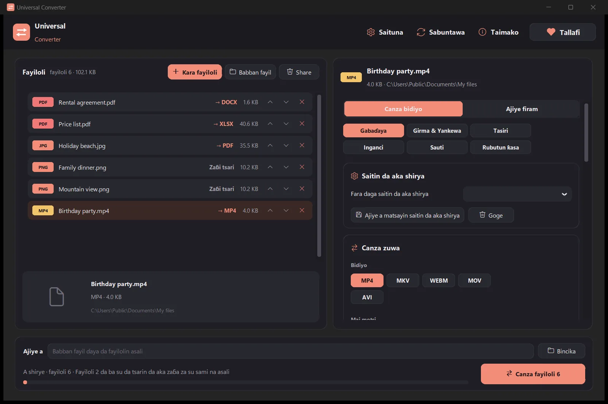

Matse bidiyo ba tare da loda shi ba
Bidiyon waya da rikodin allo sau da yawa sun fi girma fiye da yadda ake buƙata. Universal Converter yana sake ɓoye su da sababbin kodeks kamar H.265 da AV1, don su ɗauki ƙaramin sarari kuma su ci gaba da kyau.
Yadda ake shigarwa da sabuntawa
- Buɗe .dmg da ka sauke kuma ka ja Universal Converter zuwa Applications.
- Buɗe manhajar. A karon farko macOS zai toshe ta saboda Apple bai sa mata hannu ba: danna Done.
- Buɗe System Settings > Privacy & Security, gungura ƙasa, danna Open Anyway kuma ka shigar da kalmar sirrinka. Sau ɗaya kawai za ka yi haka.
Sabuntawa: idan ka ba da izini lokacin da manhajar ta fara buɗewa, tana duba sababbin siga duk lokacin da ta fara, tana tabbatar da sa hannunsu na dijital kuma tana shigar da su lokacin da ka zaɓa.
Yadda ake shigarwa da sabuntawa
- Danna “Sauke don Android” a wayarka.
- Buɗe fayil ɗin da aka sauke. Idan Android ta tambaya, ba wa burauzarka ko mai sarrafa fayil izinin shigar da manhajoji.
- Danna Install.
Sabuntawa: manhajar tana dubawa kusan sau ɗaya a rana kuma tana gaya maka idan sabuwar siga ta shirya. Sauke ta haka nan kuma ka shigar da ita a kan tsohuwar; ana kiyaye saitunanka.
Yadda ake shigarwa da sabuntawa
- Sauke fayil ɗin .AppImage.
- Mayar da shi mai iya gudana: danna dama, buɗe Properties > Permissions ka ba shi izinin gudana a matsayin shiri (ko a terminal: chmod +x Universal-Converter-*.AppImage).
- Danna shi sau biyu. Ba a saka komai ba: manhajar ita ce wannan fayil ɗaya.
Sabuntawa: idan ka yarda a karon farko da manhajar ta buɗe, tana neman sabbin siga duk lokacin da ta fara, tana tabbatar da sa hannunsu na dijital, kuma tana maye gurbin fayil ɗin AppImage a inda yake.
Yadda ake yi
- Buɗe Universal Converter kuma ka zaɓi Bidiyo a hagu.
- Ja fayilolinka ko dukan babban fayil cikin taga, ko danna “Ƙara fayiloli”.
- Zaɓi MP4 kuma ka matsar da mai zamewar inganci ƙasa har sai girman ya dace da kai. Saitunan da aka shirya don waya, yanar gizo da adanawa suna taimakawa.
- Danna “Canza”. Ana ajiye sababbin fayiloli kusa da na asali, ko a babban fayil ɗin da ka zaɓa.

Me yasa ba tare da intanet ba?
Universal Converter yana yin aikin a na'urarka. Fayilolinka suna nan a ɓoye, manyan fayiloli ba matsala ba ne, kuma yana aiki ba tare da intanet ba.
Ƙarin abubuwan da zai iya yi
- Canza PDF zuwa Word
- Canza takardun Word zuwa PDF
- Haɗa fayiloli da yawa zuwa PDF ɗaya
- Matse PDF zuwa girman da ka zaɓa
- Matse PDF zuwa 100 KB, 200 KB ko kowane girma da fom na kan layi ke buƙata
- Canza shafukan PDF zuwa hotunan JPG
- Mayar da takardar da aka duba zuwa fayil ɗin Word da za a iya gyarawa
- Canza hotuna tsakanin JPG, PNG, WEBP da ƙari
- Canza girman hotuna ko rage su zuwa girman fayil
- Canza girman hoto ko sa hannu zuwa 20 KB, 50 KB ko ainihin pixel
- Haɗa hotuna zuwa PDF ɗaya
- JPG zuwa PDF ƙasa da 100 KB
- Kwafi rubutu daga hoto (OCR)
- Canza bidiyo tsakanin MP4, MKV, WebM, MOV da AVI
- Ajiye sautin bidiyo a matsayin MP3
- Yi GIF daga bidiyo
- Fitar da teburi daga PDF zuwa Excel
- Canza PDF na bayanan banki zuwa Excel
- Fitar da teburi daga takardun kuɗi na PDF zuwa Excel
- Sa hannu a kan PDF
- Cike fom na PDF